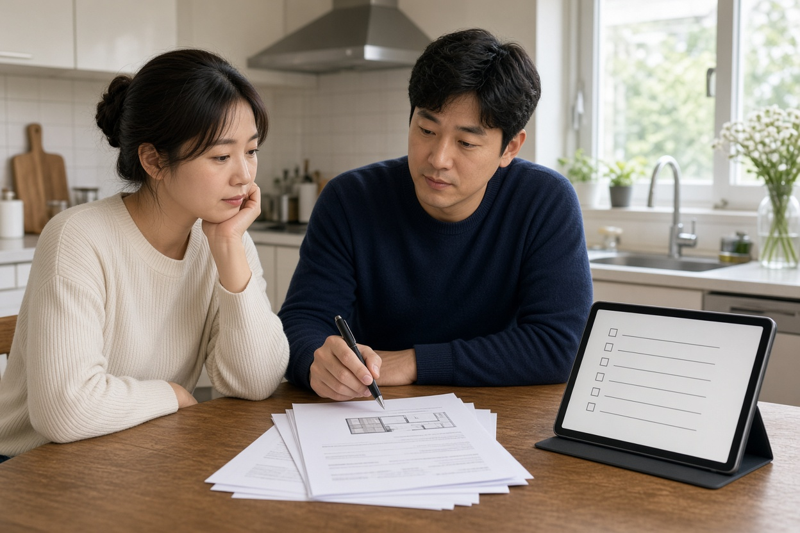

특별공급 5종 자격 정리 — 신혼·생애최초·다자녀·노부모·기관추천, 내가 해당되는 건
청약홈에 확인된 요건만 모았습니다. 단지마다 다른 숫자는 공고문 확인으로 남겨 둡니다

먼저 읽어주세요
이 글은 청약홈 특별공급 안내에서 확인된 내용을 2026년 11월 16일 기준으로 정리한 것입니다. 민영·국민주택·공공주택, 일반형·나눔형 등에 따라 소득·자산·물량 비율이 달라집니다. 본문에 구체 비율·금액을 적을 때는 청약홈에 명시된 경우만 쓰고, 단지·시점별로 달라질 수 있는 항목은 공고문 확인 필요로 표기했습니다. 청약·당첨 여부는 사업주체·관계기관 심사가 최종입니다.
“특공이 유리하다”는 말은 많이 듣지만, 정작 내가 신혼인지·생애최초인지·다자녀인지부터 헷갈리는 경우가 많습니다. 오늘은 현장에서 가장 자주 묻는 다섯 유형 — 신혼부부, 생애최초, 다자녀가구, 노부모부양, 기관추천 — 만 골라 대상·소득·자산·거주·서류·주의점을 한눈에 맞춰 봅니다.
일정은 청약 캘린더로 공고·접수를 확인하고, 일반공급으로 넘어갈 때는 청약 가점 계산기로 가점 구성을 미리 잡아 두면 좋습니다. 관심 지역 알림은 분양 알리미를 함께 쓰면 공고를 놓칠 확률이 줄어듭니다.
1. 특별공급이 일반공급과 뭐가 다른가
청약홈은 특별공급을 “정책적 배려가 필요한 사회계층 중 무주택자의 주택마련을 지원하기 위해, 일반공급과 청약경쟁 없이 주택을 분양받을 수 있도록 하는 제도”로 설명합니다. 쉽게 말하면 같은 단지라도 물량이 특공용·일반공급용으로 나뉘고, 특공 신청자는 해당 유형의 자격·선정 방식(소득구간, 자녀 수, 배점, 기관 추천 등)으로 따로 경쟁합니다. 일반공급의 가점제·추첨제·순차제와는 트랙이 다릅니다.
물량 배정 비율도 유형·주택 종류마다 다릅니다. 청약홈에 안내된 예만 보면 민영주택 신혼부부 특별공급은 건설량의 15% 내, 생애최초는 민영 7%(공공택지 17%) 내, 다자녀는 건설량의 10% 내(승인권자가 인정하면 15%), 노부모부양은 국민주택 5%·민영 3%, 기관추천은 국민주택·민영 각 10%(시·도지사 승인 시 초과 가능)입니다. 실제 단지 공고의 “특별공급 물량” 표가 최종이며, 경쟁률 숫자 자체는 단지·회차마다 달라지므로 이 글에서는 특정 경쟁률을 단정하지 않습니다. 다만 특공은 자격 문턱이 있는 대신 일반공급보다 신청자 풀이 좁아지는 구조라는 점만 기억하면 됩니다.
2. 유형별 한눈에 보기 (표)
아래 표는 민영·국민주택 중심으로 청약홈에 확인된 핵심만 압축했습니다. 공공주택(일반형·나눔형·지분적립형)은 소득·자산 산정이 더 세분화되므로 해당 단지가 공공이면 반드시 공고문을 보세요.
| 유형 | 대상 | 소득·자산 요건 | 거주 요건 | 필요한 서류(대표) | 주의점 |
|---|---|---|---|---|---|
| 신혼부부 | 입주자모집공고일 현재 혼인기간 7년 이내(민영·국민). 공공은 혼인 7년 이내 또는 만6세 이하 자녀·예비신혼·한부모 등 공고 유형별 상이 | 민영·국민: 세대 월평균소득 전년도 도시근로자 대비 140% 이하(맞벌이 160% 이하). 초과 시 부동산가액 3억 3,100만원 이하이면 추첨 가능. 공공은 비율·자산(부동산·자동차 등) 공고문 확인 필요 | 지역우선공급 기준 적용(해당/기타 지역). 거주 기간·전입일은 공고문 확인 필요 | 주민등록등본, 가족관계증명서, 혼인관계증명서, 소득 증빙(원천징수·건강보험 등). 세부 목록은 공고문 확인 필요 | 자녀 유무에 따라 1·2순위. 부부 모두 소득 시 1인 소득 한도 주의. 특공 평생 1회(예외 있음) |
| 생애최초 | 세대구성원 모두 과거 주택 소유 사실 없음. 일반공급 1순위. 혼인 중이거나 미혼 자녀 있거나(1인가구는 추첨·면적 제한). 5년 이상 소득세 납부 | 민영: 월평균소득 160% 이하(우선 130% 이하 등 단계). 초과 시 부동산가액 3억 3,100만원 이하 추첨. 국민·공공은 130% 등 상이 → 공고문 확인 필요 | 지역우선공급. 투기과열·청약과열지역은 과거 5년 당첨자 세대 청약 제한 안내 있음 | 주민등록·가족관계, 소득세 납부 증빙, 건강보험 자격·납부, 소득금액증명 등. 공고문 확인 필요 | 통장 가입·납입 요건이 일반 1순위(통상 24개월·지역별 6~24개월). 1인가구 단독세대는 60㎡ 이하 등 제한 |
| 다자녀가구 | 입주자모집공고일 현재 미성년 자녀 2명 이상(태아·입양 포함) | 민영·일부 국민: 소득기준 미적용. 특정 사업주체 국민·공공은 120% 이하 등 적용 → 공고문 확인 필요. 공공은 자산(부동산·자동차 등) 기준 있음 | 지역우선 후 배점. 거주 요건은 공고문 확인 필요 | 주민등록·가족관계, 임신진단서·입양 관련 서류 등. 배점 증빙은 공고문 확인 필요 | 통장 6개월·납입 6회 등(주택 종류별). 경쟁 시 다자녀 배점표 |
| 노부모부양 | 일반공급 1순위 + 만65세 이상 직계존속(배우자 직계존속 포함)을 3년 이상 계속 부양(동일 주민등록표 등재)하는 무주택 세대주 | 민영: 소득기준 미적용(일부 국민은 120% 이하). 공공은 120% 이하(맞벌이 200% 이하) 등 → 공고문 확인 필요 | 지역우선. 투기과열·청약과열지역은 5년 이내 당첨자 세대 청약 불가 안내 | 주민등록(부양 기간 확인), 가족관계, 세대주 입증 서류 등. 공고문 확인 필요 | 세대구성원은 신청 불가(세대주만). 통장 24개월(지역·주택에 따라 6~24개월). 민영은 가점제 |
| 기관추천 | 무주택세대구성원으로서 관계기관장이 정한 우선순위로 선정된 자(국가유공자·장애인·중소기업 근무자 등). 국민·민영에 따라 대상 목록 상이 | 기관·유형별. 일반 소득·자산표와 다를 수 있음 → 공고문·추천기관 안내 확인 필요 | 기관·공고 기준. 공고문 확인 필요 | 추천서(기관 발급), 신분·무주택 입증 서류 등. 공고문 확인 필요 | 일부(장애인·철거민·국가유공자·이전기관 종사자 등)는 청약통장 없이 가능. 선정은 기관 우선순위 |
표의 “월평균소득 %”는 청약홈이 게시한 전년도 도시근로자 가구원수별 월평균소득 대비 비율입니다. 가구원 수·맞벌이 여부에 따라 같은 %라도 금액이 달라지고, 2025년도 도시근로자 기준표가 청약홈에 게시되어 있으니 금액은 그 표·해당 공고를 보세요.
3. 유형별 자세히 — 신혼부부
민영·국민주택(공공주택 특별법 미적용) 신혼부부 특별공급의 핵심은 “공고일 현재 혼인기간 7년 이내”와 무주택세대구성원입니다. 소득은 세대 월평균소득이 전년도 도시근로자 월평균소득의 140% 이하 (부부 모두 소득이 있는 경우 160% 이하)입니다. 이 소득을 넘더라도 세대가 소유한 부동산(토지·건물) 합계액이 3억 3,100만원 이하이면 추첨제로 청약할 수 있다고 청약홈이 안내합니다. 선정은 우선공급(50%) → 일반공급(20%) → 추첨공급 순이며, 우선은 100% 이하(맞벌이 120% 이하), 일반은 100% 초과~140% 이하(맞벌이 120% 초과~160% 이하)입니다.
순위는 공고일 현재 배우자와의 사이에서 출산한 미성년 자녀가 있으면 1순위, 없으면 2순위입니다(임신·입양 포함, 전혼자녀 제외). 순위 내 경쟁이 있으면 지역우선 → 미성년 자녀 수 → 추첨 순입니다. 청약통장은 해당 주택에 맞는 통장에 가입 6개월 경과 및 예치·납입 요건을 충족해야 합니다.
공공주택 신혼은 대상이 더 넓을 수 있습니다(혼인 7년 이내 또는 만6세 이하 자녀, 예비신혼부부, 한부모가족 등). 소득·자산(일반형은 부동산·자동차 가액 등)과 우선·일반·추첨 비율(예: 우선 70%)이 민영과 다르므로, 공공 단지라면 위 민영 숫자를 그대로 쓰지 말고 공고문을 확인하세요. 2023년 3월 28일 이후 출산 자녀가 있는 가구는 소득·자산 요건이 기준 대비 최대 20%p 완화될 수 있다는 안내도 청약홈에 있습니다(해당 공고 확인).
4. 유형별 자세히 — 생애최초
생애최초는 “세대구성원 모두 과거 주택을 소유한 사실이 없는 경우”로 한정됩니다. 민영은 전용 85㎡ 이하, 공급 물량은 건설량의 7%(공공택지 17%) 내입니다. 일반공급 1순위인 무주택 세대의 세대주 또는 세대구성원이어야 하고, 혼인 중이거나 미혼 자녀가 있거나, 그에 해당하지 않는 1인가구(추첨제·면적 제한)여야 합니다. 추가로 공고일 현재 근로자·자영업자(과거 1년 내 소득세 납부 포함)로서 5년 이상 소득세를 납부한 분이어야 합니다.
민영 소득 기준은 세대 월평균소득 160% 이하이며, 우선공급(50%)은 130% 이하, 일반공급(20%)은 130% 초과~160% 이하입니다. 소득이 160%를 넘어도 부동산가액 3억 3,100만원 이하이면 추첨 공급에 참여할 수 있고, 1인가구는 소득 160% 이하이거나 부동산가액 3억 3,100만원 이하인 경우 추첨으로 안내됩니다. 통장은 1순위 요건(가입기간·예치금, 지역·주택에 따라 6~24개월)을 충족해야 합니다.
국민주택(공공주택 특별법 미적용)은 물량 20% 내, 소득 130% 이하 등으로 민영과 다르고, 저축액 600만원 이상 등 추가 요건이 있습니다. 공공주택 생애최초는 물량 15% 내, 소득·자산(부동산·자동차 등) 기준이 별도입니다. 투기과열지구·청약과열지역 주택은 과거 5년 이내 다른 주택 당첨자가 속한 세대는 청약 불가라고 청약홈이 안내합니다. 본인 세대 당첨 이력은 청약홈에서 먼저 확인하세요.
5. 유형별 자세히 — 다자녀가구
다자녀는 공고일 현재 미성년 자녀 2명 이상(태아·입양 포함)을 둔 무주택세대구성원이 대상입니다. 민영·국민주택(공공주택 특별법 미적용) 기준으로 공급 물량은 건설량의 10% 내이며, 승인권자가 인정하면 15%까지 가능하다고 안내됩니다. 소득 기준은 민영과 일부 국민에는 적용되지 않고, 특정 사업주체(국가·지자체·LH·지방공사 등)가 공급하는 국민주택에는 월평균소득 120% 이하가 적용됩니다. 공공주택 다자녀는 소득·자산 기준이 별도로 있습니다.
선정은 지역우선 공급 후, 지역 내 경쟁 시 다자녀가구 배점기준표 점수가 높은 순입니다. 공공주택은 우선공급(90%)과 추첨공급(맞벌이 고소득 구간)으로 나뉘는 안내가 있습니다. 청약통장은 가입 6개월·월납입 6회 이상 등(주택 종류별 예치·납입)을 충족해야 합니다.
실무에서 자주 걸리는 지점은 “자녀 수 산정”입니다. 미성년 여부, 태아·입양 인정, 전혼자녀·재혼 자녀의 등재 요건은 공고·배점표에 따릅니다. 배점 항목(무주택기간, 해당 시·도 거주기간, 자녀 수 등)의 만점·배점은 단지 공고의 배점표를 그대로 써야 하며, 이 글에서는 점수를 창작하지 않습니다.
6. 유형별 자세히 — 노부모부양
노부모부양은 일반공급 1순위에 해당하면서, 만 65세 이상 직계존속(배우자의 직계존속 포함)을 3년 이상 계속 부양하고 같은 세대별 주민등록표에 등재된 무주택 세대주만 신청할 수 있습니다. 세대구성원은 청약 불가입니다. 공급 물량은 국민주택 5%, 민영주택 3%로 안내됩니다. 투기과열·청약과열지역에서는 과거 5년 이내 다른 주택 당첨자가 속한 세대는 청약 불가입니다.
민영·일부 국민에는 소득 기준이 없고, 특정 사업주체 국민주택에는 120% 이하가 적용됩니다. 공공주택은 월평균소득 120% 이하(맞벌이 200% 이하)와 자산 기준이 있습니다. 통장은 가입 24개월(지역·주택에 따라 6~24개월) 및 납입·예치 요건을 충족해야 합니다. 민영은 지역우선 후 가점제(무주택기간·부양가족·통장 가입기간)로 선정하고, 국민주택(공공주택 특별법 미적용)은 순차제(무주택기간·저축총액·납입횟수)입니다.
청약홈은 노부모부양 특공의 무주택기간 산정 시 피부양자 및 피부양자 배우자가 주택을 소유했던 기간은 무주택기간에서 제외한다고 안내합니다. 가점이 같으면 입주자저축 가입기간이 긴 자가 우선입니다. 일반공급 가점과 숫자가 같아 보여도, 특공용 산정·부양가족 포함 범위가 다를 수 있으니 공고의 가점·순차 표를 기준으로 계산하세요. 가점 연습은 청약 가점 계산기로 하되, 최종 제출 점수는 해당 공고 기준으로 다시 맞추면 됩니다.
7. 유형별 자세히 — 기관추천
기관추천은 관계기관의 장이 정하는 우선순위 기준에 따라 대상자로 선정된 무주택세대구성원에게 공급됩니다. 대상 주택은 원칙적으로 전용 85㎡ 이하 분양주택(국민주택·민영)이며, 일부 시책·한부모·철거세입자 등은 예외·임대 유형이 있을 수 있습니다. 특별공급 물량은 국민주택·민영 각 10%이며, 시·도지사 승인을 받으면 초과 공급이 가능하다고 안내됩니다.
공통 대상 예로는 국가유공자, 독립유공자, 보훈대상자, 장애인, 북한이탈주민, 중소기업 근무자, 올림픽 등 입상자 등이 있고, 국민주택·민영에 따라 철거주택 소유·거주자, 다문화가족, 해외취업근로자 등 목록이 달라집니다. 선정은 국가보훈부·지자체·중소벤처기업부 등 관련 기관이 정한 우선순위에 따릅니다. 장애인, 철거민, 국가유공자(규칙 제35·36조), 이전기관 종사자(제47조) 등은 청약통장 없이 청약 가능하다는 안내가 있습니다.
기관추천은 “내가 자격에 해당한다”고 느끼는 것과 “기관에서 추천을 받았다”가 별개인 경우가 많습니다. 추천 접수 기간·제출 서류·순위는 기관 공지와 단지 입주자모집공고를 함께 봐야 합니다. 추천을 받았더라도 무주택세대구성원·신청 주택형·중복 신청 제한은 그대로 적용됩니다.
8. 내가 해당되는지 3분 체크
아래 여섯 가지를 순서대로 보면, 특공 유형을 좁히기가 수월합니다.
- ① 무주택세대구성원인가? 본인·배우자·동일 등본 직계존비속(분리 배우자의 등본 포함)이 주택·분양권등을 소유하지 않아야 합니다. 특공 대부분의 출발점입니다.
- ② 혼인 7년 이내인가? 예이면 신혼부부 특공을 1순위로 검토합니다. 공공은 예비신혼·한부모·만6세 이하 자녀 등 확장 대상이 있는지 공고를 봅니다.
- ③ 세대 전원이 집을 한 번도 소유한 적 없고, 5년 이상 소득세를 냈는가? 예이면 생애최초 특공 후보입니다. 1인가구·단독세대면 면적·추첨 제한을 공고에서 확인하세요.
- ④ 미성년 자녀가 2명 이상인가? 예이면 다자녀 특공 후보입니다. 태아·입양 인정과 배점 서류는 공고 확인이 필요합니다.
- ⑤ 만 65세 이상 직계존속을 3년 이상 같은 등본으로 부양하는 세대주인가? 예이면 노부모부양 특공 후보입니다. 세대구성원 명의로는 신청할 수 없습니다.
- ⑥ 보훈·장애·중소기업·철거 등 기관추천 대상에 해당하고, 추천 절차를 밟았는가? 해당하면 기관 안내와 단지 공고의 기관추천 일정을 확인합니다.
여러 유형에 동시에 해당하는 경우도 있습니다. 다만 같은 단지·같은 접수에서 특공 유형을 중복으로 넣는 것은 일반적으로 허용되지 않거나 무효가 될 수 있으니 (당첨자 발표일이 같은 주택 전체에 대한 1인 1건 원칙 등) 공고의 “청약 신청 시 유의사항”을 반드시 읽으세요. 일정은 청약 캘린더로, 관심 단지 알림은 분양 알리미로 묶어 두면 체크 후에 바로 접수 타이밍을 잡기 쉽습니다.
9. 자주 걸리는 함정 5개
- 특공 유형 중복 신청·특공 평생 1회. 특별공급은 1세대당 평생 1회 당첨으로 제한됩니다. (신혼·생애최초·신생아 특공은 배우자 혼인 전 특공 당첨 이력에 대한 예외가 2024.3.25. 규칙 개정으로 안내됨.) 같은 공고에서 여러 특공 유형을 동시에 넣거나, 당첨자 발표일이 같은 주택에 2건 이상 신청하면 무효가 될 수 있습니다. 반면 동일 주택에 특공+일반공급 중복 신청은 가능하다는 안내가 있습니다(특공 당첨 시 일반공급 제외).
- 소득 기준은 “실수령액”이 아닙니다. 청약홈 특공 소득은 세대의 월평균소득을 전년도 도시근로자 월평균소득과 비교합니다. 흔히 말하는 세후 월급·이체액이 아니라, 공고가 정한 방식의 소득(근로·사업소득 등)입니다. “세전 연소득을 12로 나눈 값”에 가깝게 이해하는 편이 실수령액보다 안전하지만, 산정 기간·맞벌이·휴직·이직은 공고·사업주체 안내에 따르세요.
- 자산 기준은 주택 유형에 따라 다릅니다. 민영 신혼·생애최초의 추첨제 자산은 청약홈상 부동산가액(토지·건물 합계 3억 3,100만원)으로 안내됩니다. 공공주택 일반형 등은 부동산가액과 자동차가액을 각각 보는 안내가 있습니다. “자산=통장 잔고”로 오해하거나, 민영에 자동차 기준을 멋대로 섞지 마세요.
- 특공 낙첨 후 일반공급. 같은 단지에 특공과 일반을 함께 넣었다면, 특공 낙첨 시 일반공급 선정에서 바로 탈락하는 것은 아닙니다(특공 당첨 시에만 일반공급 제외). 특공만 넣고 일반을 안 넣었다면 그 단지 일반공급에는 올라가지 않습니다. 다른 단지 재신청은 재당첨 제한·거주지·순위 요건을 공고에서 확인해야 합니다.
- 거주·전입·세대주 요건을 공고 직전에야 맞추려다 실패. 지역우선·해당 지역 거주기간, 노부모의 3년 부양 등재, 생애최초의 통장 1순위 기간은 “접수 당일”에 만들 수 없는 조건입니다. 관심 단지가 보이면 청약 캘린더로 접수일을 역산해 등본·전입·납입을 미리 점검하세요.
10. FAQ
Q1. 특별공급과 일반공급을 같은 단지에 같이 넣을 수 있나요?
청약홈 안내에 따르면 동일 주택에 대해 1인이 특별공급과 일반공급을 중복 신청할 수 있습니다. 다만 특별공급 당첨자로 선정되면 일반공급 당첨자 선정에서 제외됩니다. 신청 화면·가능 여부는 단지 공고를 확인하세요.
Q2. 특별공급에 한 번 당첨되면 다시는 못 넣나요?
특별공급 당첨은 1세대당 평생 1회로 제한됩니다. 다만 2024.3.25. 개정에 따라 신혼부부·생애최초·신생아 특별공급은 신청자의 배우자가 혼인 전 특별공급에 당첨된 이력이 있어도 청약할 수 있습니다. 본인·세대 이력은 청약홈에서 확인하세요.
Q3. 소득·자산의 정확한 원 단위 금액은 어디서 보나요?
청약홈 특별공급 안내에 전년도 도시근로자 가구원수별 월평균소득 표와 민영 신혼·생애최초 추첨의 부동산가액(3억 3,100만원) 등이 게시되어 있습니다. 가구원 수·맞벌이·민영/국민/공공·우선·일반·추첨에 따라 적용 구간이 달라지므로 최종 금액은 해당 단지 입주자모집공고문이 기준입니다.
Q4. 특공에 떨어져도 일반공급은 가능한가요?
같은 단지에 특공+일반을 함께 신청했다면, 특공 낙첨 후에도 일반공급 선정 절차에 남을 수 있습니다. 특공만 신청했다면 그 단지 일반공급에는 포함되지 않습니다. 다른 단지·다른 공고 재신청은 재당첨 제한 등을 공고에서 확인하세요.
11. 참고 자료
- 청약홈 — 특별공급 안내 (applyhome.co.kr)
- 국가법령정보센터 — 「주택공급에 관한 규칙」 (law.go.kr)
마이홈포털(myhome.go.kr)·국토부 보도자료는 작성 시점(2026-11-16) 기준으로 접속이 확인되지 않아 본문 참고 링크에서는 제외했습니다. 제도 해석이 갈리면 해당 단지 입주자모집공고문과 청약홈·법령 조문이 우선입니다.

본 글은 2026년 11월 16일 기준 청약홈 공개 안내를 정리한 정보이며, 청약 자격·당첨은 입주자모집공고문과 사업주체·관계기관 심사가 최종입니다. 투자·청약 권유가 아닙니다.